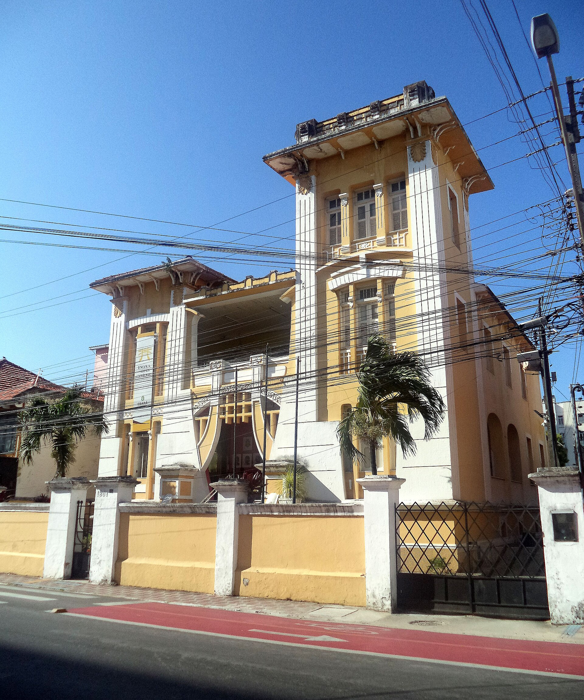
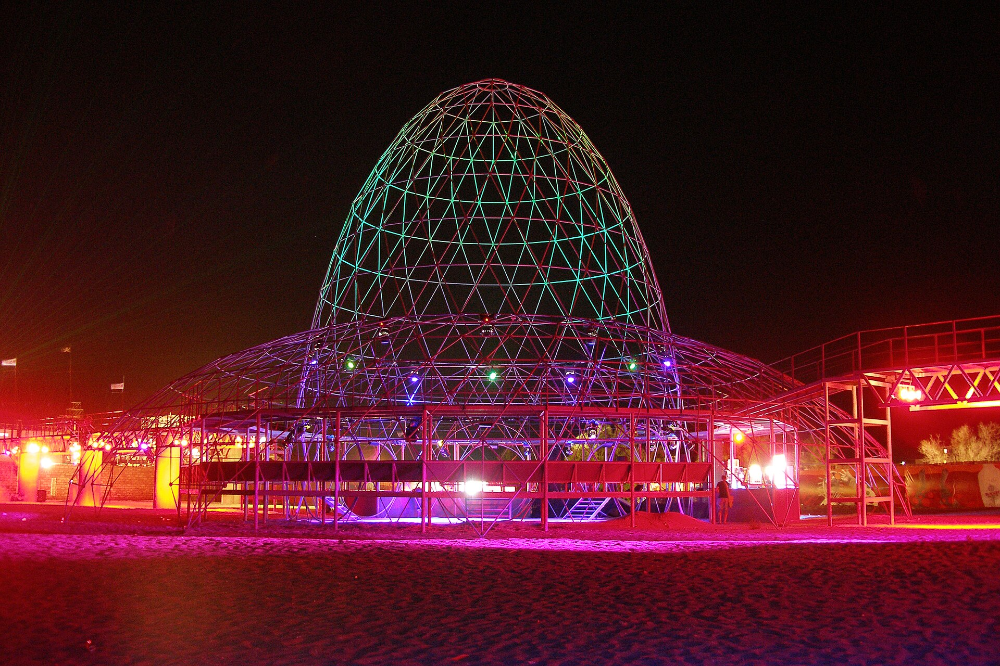
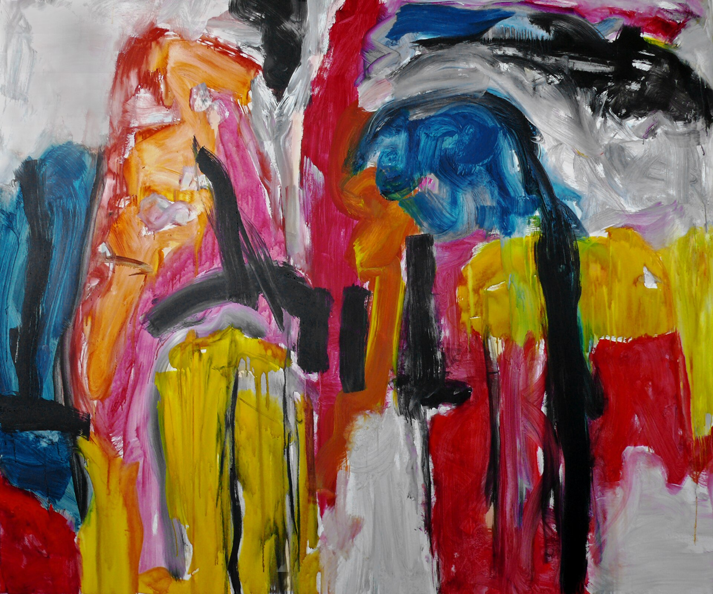

Um pub que vai além do bar
O KAZA nasceu em Fortaleza para ser um espaço único: a experiência de um aconchego com uma pista de dança, dentro de um casarão histórico.
Tem drinks autorais, caipirinhas premium, lounges com aquele toque VIP e música boa até tarde. É a casa de quem gosta de encontro, e de experiências que ficam na memória.

Quando a KAZA abre
Quinta: das 19h à 01h
Sexta e sábado: das 20h às 03h
Happy hour: quinta e sexta, das 20h às 23h.
Hora Boa do KAZA
Kaipirinha tradicional de R$ 19 por R$ 15. Drinks autorais como Dona Helena, Belchior e Kaza Mule a partir de R$ 24, clássicos a partir de R$ 15 e comidinhas a partir de R$ 14.
Ver o happy hourDrinks, petiscos e cerveja gelada
O que rola na KAZA
A programação da semana sai no nosso Instagram, nos destaques "Agenda". Em breve, direto aqui.
Noites que ficam na memória


Vem pra KAZA
Reservas, aniversários e ativação de marcas: fale com a gente pelo WhatsApp.
A KAZA é nossa!